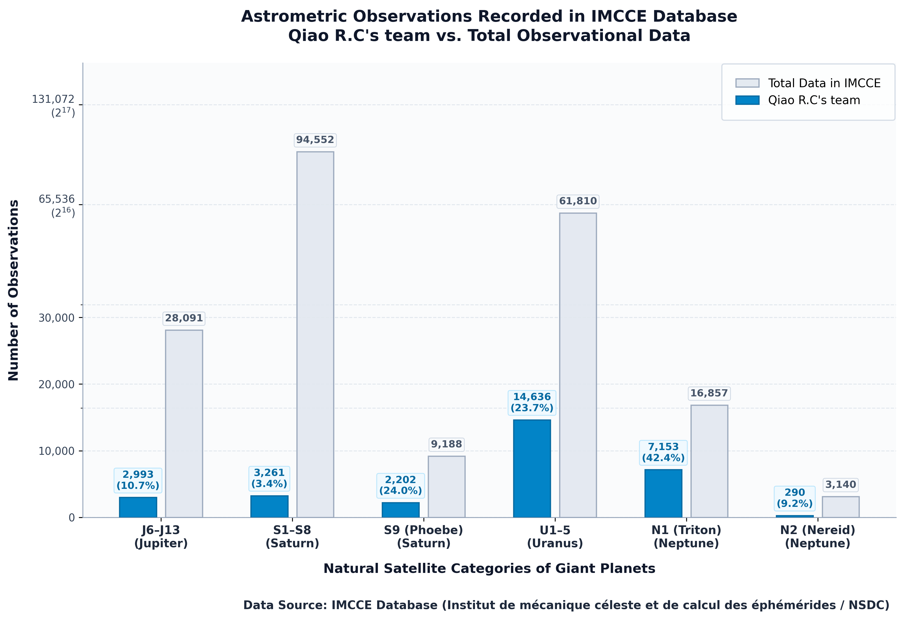
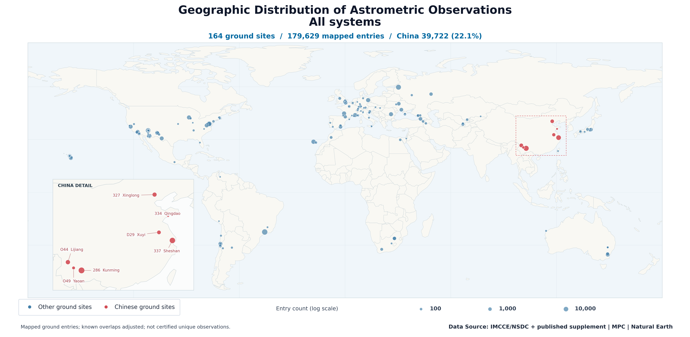
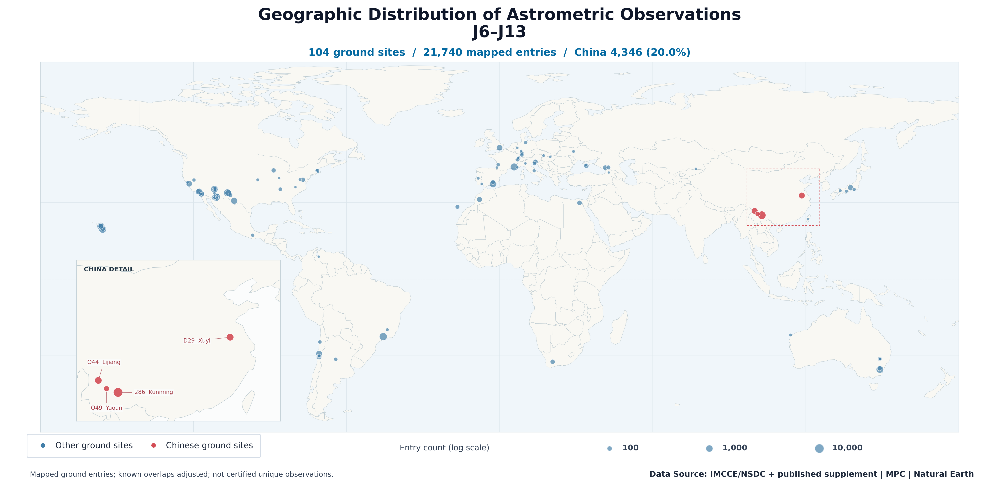
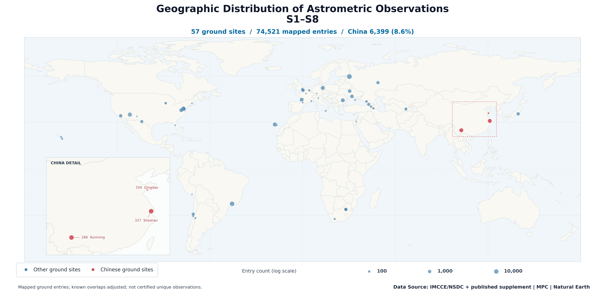
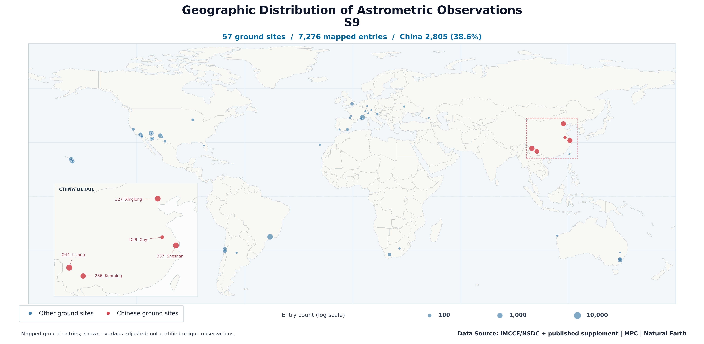
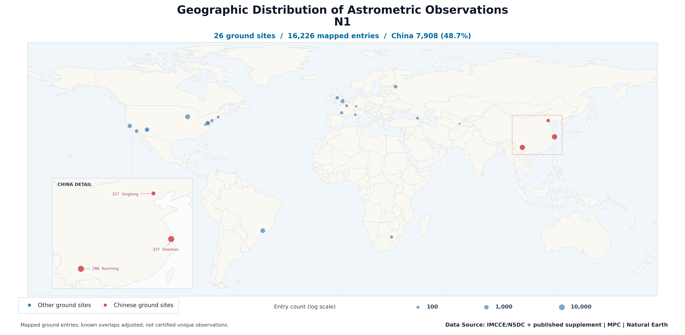
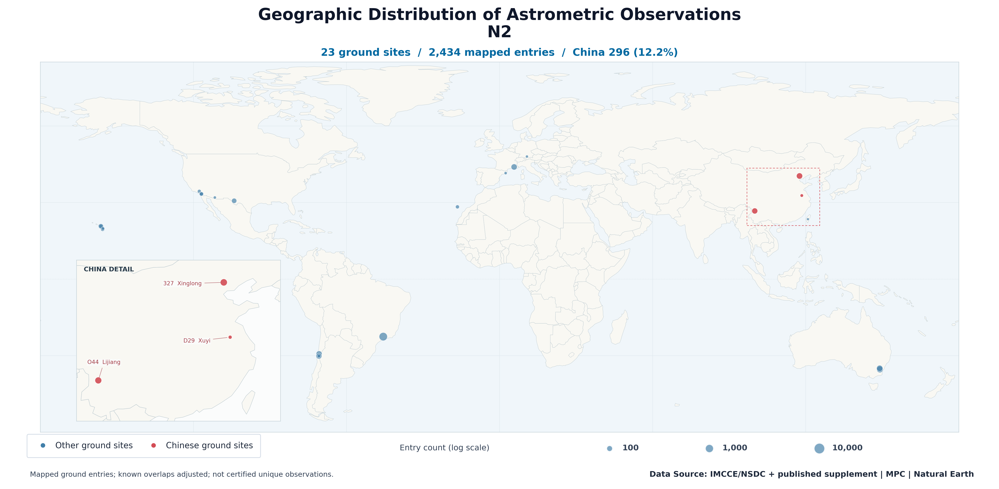

2026-10-19 · 来源可追溯 · 图件统一高 2350 px
主图为已知重叠调整后的目录位置条目，仍有待核重归算关系。团队 30,535 / 全球 213,638 = 14.29%；这不是已认证的唯一观测份额。
柱状图：蓝柱为团队，灰柱为全球（包含团队）。地图：红点为中国台站，蓝点为其他地区台站；中国台站不等于本团队。地图展示已定位地面条目 179,629，空间 27,976 与待核 6,033 不画在地图上。
交付与口径说明 · 六系统统计 CSV · 来源与规则清单 · 验证日志






